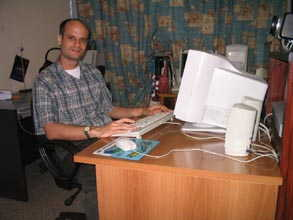

|
William Miller - ORT'S Man in Cuba The first impression William Miller makes is that he is a highly-intelligent and focused young man. William, a professor in electronics at Havana Technological University, working on a graduate degree in telecommunications and software engineering, is also head of the ORT computer laboratory located in the Patronato, Havana압 Jewish Community Center. As part of his involvement with ORT (ORT is an acronym for the original Russian name), William has pioneered the creation of an extensive website for the Patronato and for Cuba압 other Jewish communities. www.chcuba.org has recently gone online and is being developed as both a Spanish and English-language site, with extensive coverage of local events and history. "We want to show the real life of the Cuban Jewish community through our eyes," he says. "You have to live here to understand what is going on. This site is created one hundred percent by local people." It is some of these local people that William is helping train through the facilities provided by ORT, and through the involvement of the Patronato. "Just two years ago this website was only an idea," he says. "Then we started gathering information, and a team came together consisting of a designer, two software engineers, a journalism student, and myself."  Part of this gathering of information resulted in a newsletter, "Menorah," which for the time being serves the same purpose as a website, although on a less global scale. "Most communities don앖 have access to the internet," says William, "so it is difficult to communicate what we are trying to do." Internet access in Cuba is restricted to academic and other professional institutions, with some rare individual exceptions. "We try to simulate an internet environment by setting up an intranet," says William, "but it just isn앖 the same thing." Within this environment of limited access William has managed to put together a professional website, using an ORT server in London, with the site압 content created entirely in Cuba. "In the future," he says, "we hope to get our English version online, and also provide a more comprehensive and frequently-updated resource so that people logging on can know what is happening and when it is happening. We want to have all the necessary contact information easily available." When asked about how the Cuban-based site would interact with other sites which have Cuban Judaism as a focus (such as jewishcuba.org), Williams says there is room for all. "We will have a unique local focus which other sites cannot have, because they are not here," he says. "But we all need each other. We need the external sites for resources and as a means to share information. The external sites need us for our local perspective and experience." Although William압 work with the website is just a small part of his involvement, it promises to eventually have the most visibility. Even as he works to promote ORT압 goal of providing technological information for the Jewish people, and provides education for Havana압 Jewish community and others, his and his team압 involvement with the website will continue. "It압 not finished," he says. "This will be something we continue to work on. It will always be improving." Article by Richard
Smith To log onto the website for Comunidad Hebrea de Cuba, go to http://www.chcuba.org. |